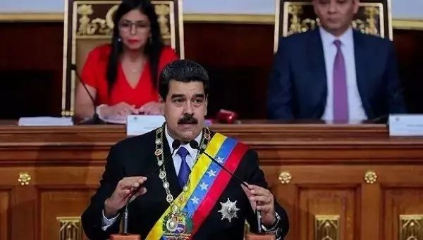
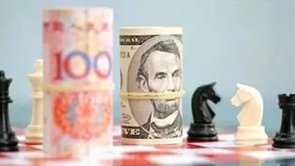
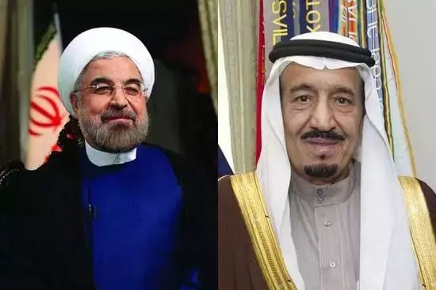
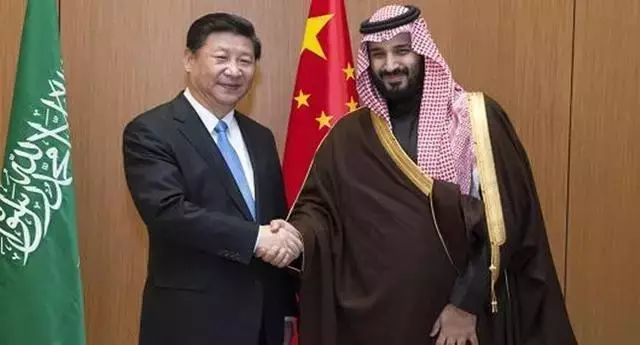
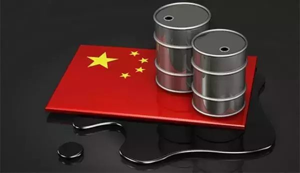

点击蓝字【墨者善狩】一键免费订阅后回复标题前面数字即可查看更多精彩内容：
【 06 】 中国精心布局30年，美国到现在才看懂，已经彻底晚了!
【 07 】 中国为何不打仗，少将揭秘，南海和钓鱼岛内幕令人拍案叫绝
【 08 】七年之内、全球布局、狂砸1.2万亿！中国彻底终结美国霸权
【 09 】西方大乱，特朗普率先“投降”，中国百年不遇的好机会来了

图为委内瑞拉总统马杜罗
北京时间 2017年9月7日，委内瑞拉宣布：弃用美元，改用人民币！
委内瑞拉总统马杜罗宣布：委内瑞拉将在国际支付机制中使用以人民币为首的一篮子货币，取代美元在委内瑞拉国际支付体系中的主导地位。
同时，作为石油大国的委内瑞拉还表示将以非美元的方式出售石油和黄金，这意味着未来可以直接用人民币从委内瑞拉购买石油，而不是通过美元、欧元等中转了。
这是一个国家首次如此公开宣布，是人民币国际化脚步的重要一步，具有重大的意义。
什么是人民币国际化？
很简单，就是像黄金一样成为硬通货，各个国家都承认的、都可以使用的货币，能做到全球计价、全球结算、全球储备。
举例：比如有一个游戏厅、餐厅和超市，其中游戏厅必须有游戏币才能玩、餐厅必须用餐票才能买到食品、超市必须用代金券才能东西！很显然，游戏币是不能到餐厅买到饭的，餐票也不能到超市买到必需品的，代金券也不能到游戏厅玩游戏的！
这里的游戏币、餐票和代金券就相当于各个国家的货币，这些国家之间的货币在彼此的国家是不认的！那么，我有游戏币的人如何才能去餐厅吃饭呢？
很简单，我可以把游戏币换成人民币，然后用人民币去买餐票，然后用餐票就可以去吃饭了！
人民币国际化的就相当于充当游戏厅、餐厅和超市之间中介的 “人民币”的角色！
未来，一旦人民币可以直接购买到原油、黄金、铁矿，那么人民币在国际上的信用和地位就会变的很高很高了。这将是人民币迈向巅峰的道路，而现在这条路变得越来越可能实现。

目前，不止委内瑞拉选择人民币作为结算货币，宣布要摆脱美元，还有一些国家也已经开始降低对美元的依赖，加大人民币的比重了。
众所周知中东拥有着丰富的石油资源，沙特和伊朗更是两个最大的产油国，所以两国之间对市场份额的纷争可谓是一直不断，沙特因为在美国的庇护下石油出口可谓是如日中天，不用愁，而伊朗在美国的制裁下市场份额不断的减少。但是在这次石油战中，原油库存大量囤积，油价低迷不断。沙特与伊朗的矛盾不断。
自从伊朗的制裁解除不久，为迅速发展国家经济，于是不断增产石油，争抢市场份额与沙特闹翻，沙特对其实施海上拦截，不允许载有石油的伊朗轮船通过沙特境内。直接遏制了伊朗快速发展增大石油产量的步伐，这对于伊朗来说可谓有苦说不出。在这个时候中国站了出来。

在伊朗被制裁的时候，中国站出来 站到了伊朗的身后。 “在后伊核时代，中国仍将是伊朗发展过程中的重要伙伴。”
鲁哈尼回忆了 2014年5月对中国的访问，他说：“我们与中国保持了高水平的合作关系，而且我们双边关系的未来也在朝着积极方向发展。” 鲁哈尼对中国在伊核谈判中的贡献表示感谢。
鲁哈尼对中国在伊核谈判中的贡献表示感谢。

伊朗在解除制裁之后也积极与中国回应
下面我们来看看伊朗做了哪些事：
1、 据日本新闻网 6月9日消息，伊朗政府已经停止向日本出口石油天然气(LPG)。此从2012年2月开始，事实上日本已经无法从伊朗进口石油天然气。虽然伊朗政府没有说明停止的理由。但是明眼人还是能看出来伊朗对于日本的信任正在逐渐失去。
2、 伊朗央行 2016年1月2日宣布,在与外国进行交易时停止使用美元结算,使用包括人民币、欧元、卢布等货币签订外贸合同。
3、 看到美元霸权的没落内心当然有点兴奋，为了了解一下伊朗停止使用美元的目的，特意上网找了一下相关消息。结果发现： 2015年1月25日，伊朗中央银行宣布将在与外国进行交易时停止使用美元结算。伊朗央行副行长卡姆亚卜说，从现在起，在签订外贸合同时将使用其他货币，包括人民币、欧元、土耳其里拉、俄罗斯卢布和韩元。
大家都知道阿扎德干油田是世界最大的油田之一，也是伊朗近 30年来发现的最大油田，原油储量约420亿桶，其开发权是一起和中石油开发，不仅如此伊朗还不但将其原属日本的3座大型油井中的2座以日本所花价格的1/3强行划归中国，而且，又在今年上半年，将日本最后一块大型油田的55%的产量划归中国使用

中伊建交近 45年以来，伊朗与中国的合作关系已经越来越密切，不管是在能源上还是在军事上。同时中国是伊朗目前最大的能源贸易伙伴，伊朗也是中国“一带一路”倡议的重要部分，具有极其重要的战略地位。
于伊朗而言，同样是卖石油，还不如卖给患难见真情的国家。这句话在表面中国要在原油的路上越走越宽，也越走越快了！
中国就是全球的亮点，原油界的真正的大佬。中国作为第一原油进口大国，同时也是原油消费大国，现如今的石油定价权的天平似乎正在向中国倾斜。
结语：笔者专注国际金融形势和国内财经动态以及现货投资市场，对黄金、白银、原油（沥青）、股票、现货铜大宗商品等有深入的研究，做单不顺或投资经常资金缩水，那么你可以多关注笔者。专业成就品质，实力铸就信誉。金融领域，博大精深，每天行情波折不断，我所能做的就是用我多年的研究经验，给大家帮助。
大海虽然浩瀚，也是由无数个小水滴组成的。华尔街的投资高手中，不管是索罗斯还是巴菲特，他们的财富也是从每一单的交易中一点一点积累的，没有几十年的积累他们也不可能拥有今天的成就。古人云：不积硅步无以至千里，千里之行始于足下。希望这句话也能成为我们之间的共勉。
英国：已成为第二大离岸人民币清算中心
欧洲地区人民币支付清算超过半数在英国进行，英国已超越新加坡成为第二大离岸人民币清算中心。
SWIFT今年4月统计显示，2014年3月至2016年3月间，英国的人民币支付额增加21%，英国与中国内地和香港的全部支付业务中，有40%以人民币结算。人民币是该支付通道中使用最普遍的货币，远远超过紧随其后的港元(24%)和英镑(12%)。
新加坡：东南亚人民币存款最多的国家
新加坡离岸人民币市场发展迅速，新加坡是东南亚人民币存款最多的国家。
汇丰银行最新发布的人民币国际化研究报告显示，新加坡企业使用人民币的比例从 2015年的15%增加至2016年的26%，是中国以外使用人民币最大的群体。
韩国：计划将首尔打造成人民币离岸中心
韩国政府近年来积极推进人民币离岸中心建设，计划将首尔打造成亚洲仅次于中国香港的人民币离岸中心。
据韩国银行统计， 2016年第三季度，韩国出口贸易中人民币结算金额达22.39亿美元，占比1.84%；进口贸易中人民币结算金额为9.73亿美元，占比0.95%。
韩国政府表示，将积极鼓励韩国企业在对华贸易中使用人民币结算，努力把人民币在韩中贸易项下的结算比例提升至 20%。
欧洲央行：将 5亿欧元的美元储备转换为人民币
2017年6月13日，欧洲央行表示已经把等额5亿欧元的美元储备转换为人民币。
此次投资人民币储备，也是因为国际货币基金组织 (IMF)已将人民币视为可自由使用货币，并将其纳入SDR货币篮子，成为继美元、欧元、日圆和英镑之后的SDR篮子内第五种货币。